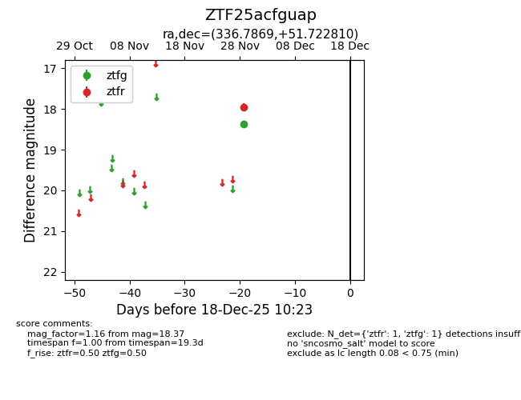
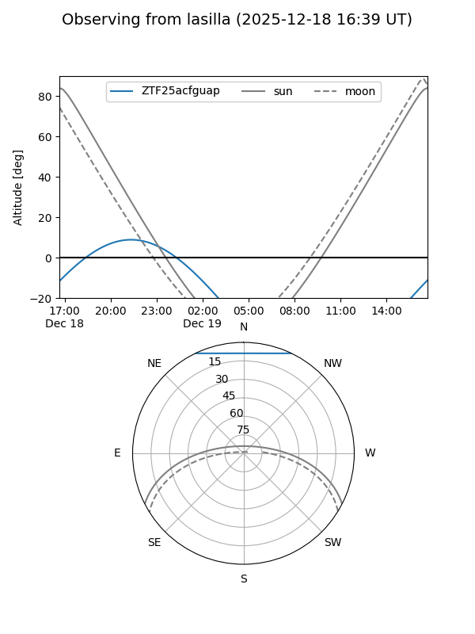
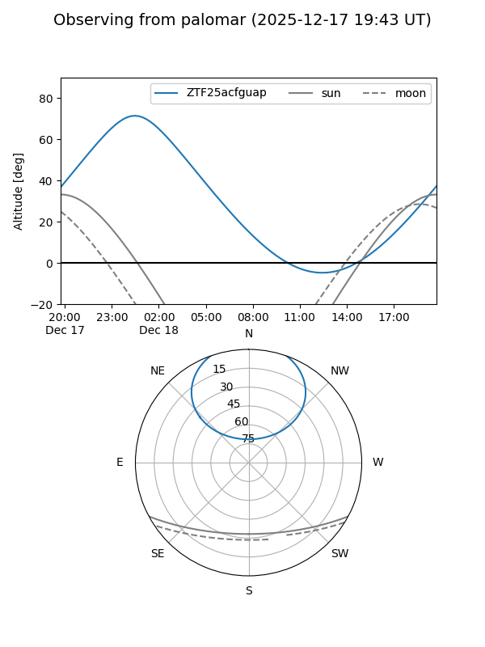

ZTF25acfguap
Target ZTF25acfguap at 2025-12-18 11:17
Aliases and brokers:
FINK: fink-portal.org/ZTF25acfguap
Lasair: lasair-ztf.lsst.ac.uk/objects/ZTF25acfguap
ALeRCE: alerce.online/object/ZTF25acfguap
alt names
ZTF25acfguap (ztf,fink_ztf)
Coordinates:
equatorial (ra, dec) = 336.7869,+51.72281
equatorial (HMS+DMS) = 22:27:08.86,+51:43:22.11
galactic (l, b) = (101.4531,-5.02883)
Photometry
last ztfg=18.37, ztfr=17.96
1 ztfg, 1 ztfr detections
Lightcurve

Visibility


Additional plots